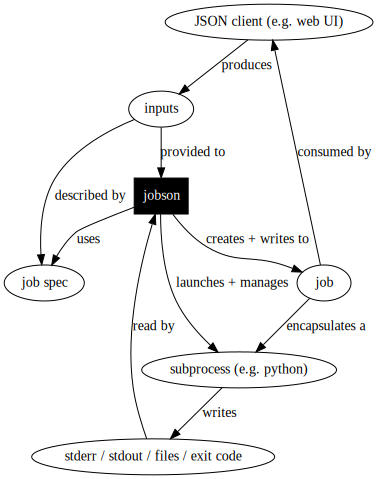

How It Works¶
Jobson’s architecture separates configuration, execution, and client interaction into three distinct APIs.
Configuration: Job specs¶
Job specs are configured by admins and contain details about an application that Jobson should host. An example job spec would be:
1 2 3 4 5 6 7 8 9 10 11 12 13 14 15 16 17 18 19 | ---
name: Example Job Spec
description: A job that echoes the provided first name
expectedInputs:
- id: firstName
type: string
name: First Name
description: Your first name
default: Jeff
execution:
application: echo
arguments:
- ${inputs.firstName}
|
These configuration files are used by Jobson to automatically:
Generate a HTTP/websocket API for the job
Validate requests to run the job (correct inputs, etc.)
Execute the job as a subprocess
Persist the job’s output.
Execution: Subprocesses¶
At runtime, Jobson uses the information contained in job specs to fork a child process on the host operating system. This means that, to Jobson, execution is a black box that:
Is launched by the host operating system with command-line arguments and dependencies (files, scripts, etc.)
Runs for an undetermined amount of time, perhaps producing continuous outputs via pipes (e.g.
stdout,stderr)Exits with an exit code
Produces files as a side-effect
Client Interaction: HTTP/Websockets¶
At runtime, Jobson uses the information contained in job specs to generate a standard HTTP/websocket API that clients use.
Features of the API:
Jobson requires clients to provide the correct information (job inputs, logins, etc.) via the API, which shields the underlying applications from receiving bogus inputs
Jobson’s execution approach (above) directly uses process forking so clients cannot, for example, use shell injection attacks (there is no shell)
The API is declarative and structured, which enables clients to automatically generate inputs for job specs, which is what the UI does.
With this approach, Jobson is able to shield clients from the
configuration and execution layers of the application and ensure that
the underlying applications receive correct inputs. This means that
the underlying application can radically change without breaking
downstream users - provided the expectedInputs exposed to the
client remain the same.